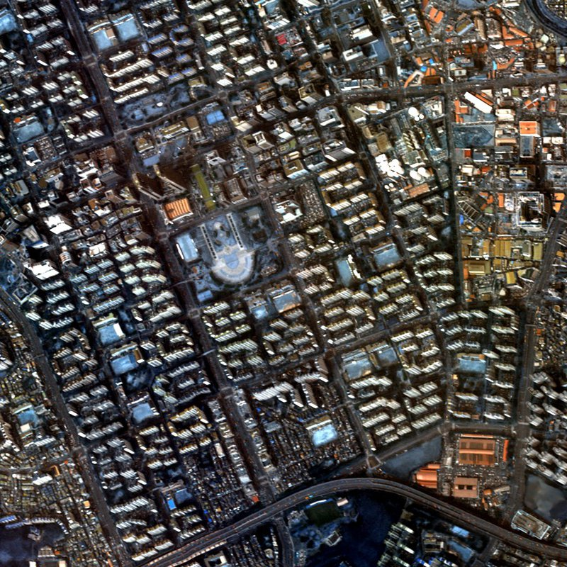

KOMPSAT-3A 위성 센서 데이터에서 방사 모사 및 MTF 필터 기반 공간 열화 모사를 통해 학습 데이터 도메인 격차를 해소하고, 대규모 원격탐사 파운데이션 모델을 활용하여 10m급 Sentinel-2 대역을 2.5m급 고해상도 정보로 초해상화하는 프레임워크를 제안합니다.

공간해상도 2.5m 다중분광 밴드 (R, G, B, NIR) 입력 데이터 확보
분광 특성 매칭을 위한 방사 보정과 대기 차이 및 MTF 필터 기반 공간 해상도 열화
NASA·IBM 위성 파운데이션 모델에 LoRA를 장착하여 지상 도메인 특성 최적 적응
Hybrid Attention Block 디코더와 잔차 학습 구조를 통해 2.5m급 RGB 복원
기존의 딥러닝 기반 위성 이미지 초해상화 연구는 고해상도 영상을 단순히 가우시안 필터나 바이큐빅 방식으로 다운샘플링하여 학습 데이터를 구축하는 중대한 도메인 격차(domain gap) 한계가 있었습니다. 본 연구에서는 실제 위성 카메라의 비물리적/물리적 요소를 순차 모사했습니다.
Sentinel-2 위성 영상은 고유의 대기 및 지상 피복 분포의 글로벌 컨텍스트를 지니고 있습니다. 일반 컴퓨터 비전 사전학습 모델의 부적합성을 돌파하고자 NASA와 IBM이 공동 제작한 Prithvi-EO-2.0(300M parameter ViT) 인코더를 결합했습니다.
일반 L1 혹은 L2(MSE) 단일 손실 함수만을 채택할 경우 경계면이 뭉개지거나 블러화(Blurring)되는 문제 및 스펙트럼 정보의 극심한 색상 이상 왜곡이 발생하는 원격탐사 고유의 문제를 공략했습니다.
본 프레임워크 연구 및 데이터셋 공유, 관련 공간정보 융합 연구에 관심이 있으신 연구자분들의 협력을 환영합니다.